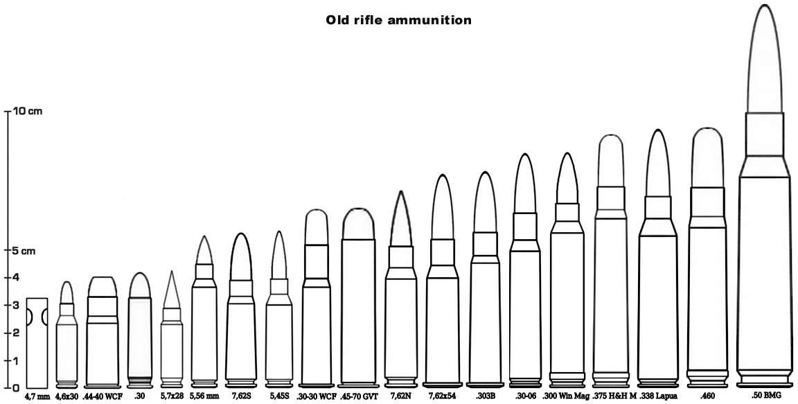

LES MUNITIONS POUR ARMES D'EPAULE
Les munitions suivantes sont destinées aux fusils et carabines.
Les munitions anciennes
Ces munitions existent depuis le vingtième siècle. En 2020, on en rencontre de temps à autre en version "douilles combustibles" (caseless), mais certaines n'ont jamais été adaptées aux standards modernes.
| Abréviation .30 |
Désignation .30 Carabine |
Dégâts 2D6+3 |
Prix des 10 $6 |

Les munitions modernes
Les munitions suivantes sont couramment utilisées en 2020. Contrairement aux armes de poing, la plupart des vieux standards sont tombés en désuétude, car il ne correspondent plus à ce que l'on recherche, notamment avec un fusil d'assaut : une charge assez puissante pour percer une armure rigide, comme celles utilisées généralement par les forces armées. Les plus petits calibres sont réservés à l'usage civil, dans le cadre de la défense d'une propriété privée.
| Abréviation 4,5 mm LP |
Désignation 4,5 mm à liquide propulseur |
Dégâts 4D6 |
Prix des 10 $2 |
AP : ces munitions réduisent de moitié la protection des armures. Dégâts normaux à la chair.